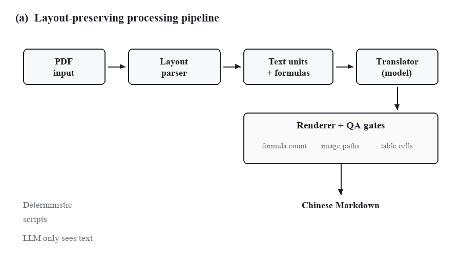

1. Introduction
Document translation systems are often evaluated on plain text, where paragraphs flow without columns, floats, or numbered equations. Real scientific manuscripts are less cooperative. A single page may combine a two-column body, a full-width abstract, inline symbols, display equations, a figure caption, and a table whose header is split into several cells. A translation that ignores this structure can be readable and still be wrong: formulas drift out of order, captions attach to the wrong image, and table headers lose their meaning.
This demo document isolates those layout features. It is not a study of any physical system. The numbers in the figures are generated by simple functions, and the references are invented. The goal is to provide a compact, redistributable input for testing a deterministic parsing and rendering pipeline, and for showing what a translated version looks like when the original layout is respected.
A second motivation is reproducibility. Papers used in layout experiments are often copyrighted, large, or difficult to redistribute. A synthetic manuscript can be checked into a repository, regenerated from source, and compared across tools without asking a reader to download a real publication. The source of this document is a single HTML file; the PDF is produced by a headless browser and the figures are generated by a short script.
2. Pipeline Overview
The processing pipeline has four deterministic stages. First, the PDF is parsed into a structured intermediate representation. Second, the representation is split into translatable text units while formulas and images are preserved as opaque objects. Third, the units are translated by a language model. Fourth, the translated units are written back into the representation and rendered by the original document renderer. Quality gates compare formula counts, image paths, table structure, and citation markers before the result is accepted.

The separation matters because language models are good at rewriting sentences and poor at preserving byte-level structure. A model that is asked to reproduce a full page will eventually move a parenthesis or merge two table cells. A model that is asked to translate one paragraph at a time, with formulas replaced by protected placeholders, has a much smaller surface for error.
2.1. Design constraints
The pipeline is constrained to local parsing and local rendering. No page is uploaded to a remote parsing service. The translator may be a hosted model or a local model; this choice affects cost and latency but not the layout contract. The contract is simple: every formula, image, and table cell in the output must correspond to an object in the input.
2.1.1. Scope of the sample
The sample is intentionally small. It contains four figures, two tables, six display equations, and a handful of inline symbols; a real paper may contain ten times as many. The point is not scale but variety: the sample includes a diagram, a line chart, a bar chart, a heat map, a table with a split header, and equations with fractions, integrals, and limits. These are the objects most likely to be damaged by a text-only translation.